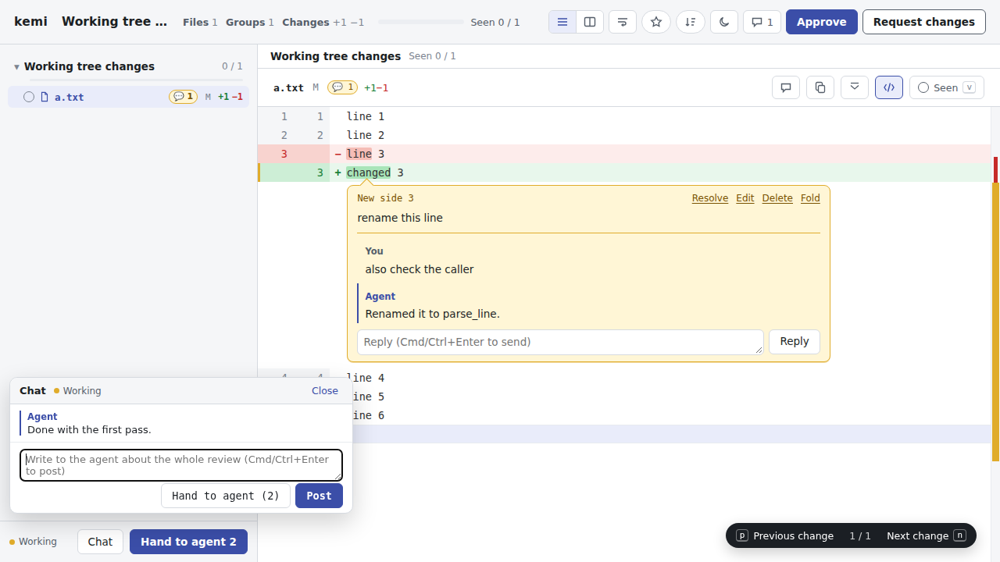

採用: 案 A2 と、会話の並びだけが新しいものについていく決まり（2026-10-05）。仕様は docs/spec/agent-channel.md。モックと仕様が食い違うときは仕様が正しい。
エージェントとの往復（agent-channel）を実際に使った感想を受けて、スレッドとチャット欄をどこに置くかを決めるモック。ここで決めるのは、どこに置くかと、差分の中のスレッドとチャット欄の関係だけ。色・上部バー・ツリーは今のまま。
--live は、動いているページとスナップショットを同じ幅で並べる。会話の置き場所は、その横に並んでも邪魔にならないこと。今の形（本物のバイナリでのスクリーンショット）

同じ内容（行へのコメントが 2 件、ファイル全体へのコメントが 1 件、全体への発言が数件）を 3 つの置き方で見せる。どの案も「畳む」で会話を閉じたときの形を確かめられる。
--live でも、同じパネルがページの横にそのまま並ぶ。--live では縦の高さを奪い合い、ページの見方が狭くなる。--live でも同じパネルを使い回せる（下の「ページの見方と並べる」）。案 C はここで作り直しになる。kemi.md の R-LIVE: エージェントの返信・発言・状態は届いたらその場で出す。スクロール位置は変えない。上のほうを読んでいる間に返信が 2 件届いたとき。並びは動かさず、札だけを出す。
案 A のパネルを、--live のページの見方の横に置いた形。ツリーは引っ込め、ページは 2 枚を同じ幅で並べる。パネルを畳めば、ページにほぼ全幅を渡せる。
docs/design/ に置き、agent-channel.md と live.md からリンクする（live.md の「まだ無い」を埋める）。